Before anything else
What follows is not a brochure. It's the document we wish somebody had given us before our own first time.
Right now you're probably thinking one of these three things.
- It looks beautiful, but I'm not fit enough.
- It looks beautiful, but I don't have the right bike and I don't have the gear.
- It looks beautiful, but 460 kilometres on my own across Tuscany, honestly, I don't feel ready for that.
We know them because we have been hearing them for thirteen years, every single day, and because exactly the same thoughts went through the minds of more than half of the six thousand people who set off last year. In the 2026 end of event survey, 55% of participants said the Tuscany Trail was the first bikepacking event of their life.
They were not athletes. They didn't have the gear. Some of them didn't even own a bike, they rented one in Campiglia the day before.
They set off anyway, and to the last question — would you recommend the Tuscany Trail from 1 to 10 — 2,116 of them answered with an average of 9.13.
This guide is here to help you work out whether you are one of them.
How this guide is put together, and what's inside
Three things.
The first is Tuscany. Not the postcard one, but the one you ride through, with white dust on your legs and the sound of gravel under your tyres. The lands the Tuscany Trail has been crossing for thirteen editions, one by one, with their villages, their abbeys, the sea, the free hot springs, the saltless bread and the wine. It's the longest part of the guide and the one we suggest you read slowly, maybe in the evening.
The second is the voices. At the end of every edition we ask all our participants how it went. In 2026, 2,116 of them answered. Almost every quoted sentence you read in here comes from there, in the language it came in and with nothing changed. The survey is anonymous, which is why you won't find any names.
The third is the answers. To the questions we get every day and above all to the ones nobody asks us because they are embarrassed to. You'll find them all in chapter 8, there are ten of them, and we'll tell you right away that they include I'm afraid of being last and I'm over sixty.
Further on you'll also find the number one mistake people make on their first time. It's not what you think, it has nothing to do with training, and hundreds of people confirm it to us in the survey every year. It's in chapter 11.
One thing this guide does not have
The route.
The exact route of the Tuscany Trail is a secret we have kept for thirteen editions and we send it only to the people who sign up, a few weeks before the start.
It changes every year, and part of it runs through private land that is opened only for the Tuscany Trail to pass through. It's the reason why people who come back a second time feel the same excitement as the first, and it's the reason why you can find hundreds of Tuscany Trail photographs online without ever managing to piece the loop together. Every corner has to be a surprise, even for the veterans. Especially for the veterans. What you'll find here are the lands. The thread that ties them together you receive once you're in.
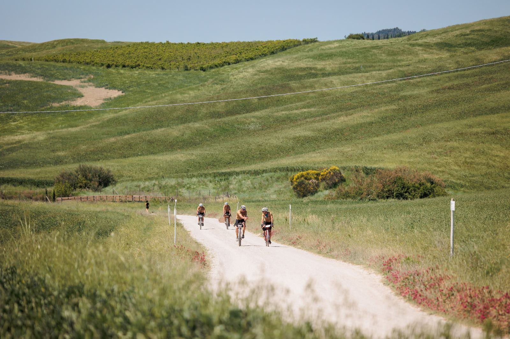
Contents
Fourteen chapters. Read them in order or jump to what you need.
What the Tuscany Trail is
In 2014 there were 68 of us
It's not a catchy line, it's exactly the number of people who turned up for the first edition, counted one by one from a single photograph taken at the start.
In 2014 almost nobody in Europe knew what bikepacking was. The word felt strange even to say out loud. And events like this one did not exist, not a single one, in any country. There was only the Tuscany Trail.
Thirteen years later six thousand people line up at the start, from seventy nations. Over the last five years more than twenty five thousand cyclists have ridden the Tuscany Trail. It's the biggest bikepacking event in the world and very likely the biggest gravel event on the planet.
Everything that came afterwards, in Italy and in Europe, came after us, and perhaps it came partly thanks to the Tuscany Trail.
2027 will be the fourteenth edition.
The rule that has never changed
No ranking. No timer. No cut-off time.
Finishing is the only goal, for the first rider as much as for the last, and nobody will ever know which of the two you were, because nobody is measuring it.
The Tuscany Trail is not a race and it never will be. Anyone looking for a performance to defend will find hundreds of events happy to offer one. People come here for something else, and the ones who come understand it by the first afternoon.
How it works, in six lines
- You sign up and you receive the official GPS track.
- You pick up your pack in Campiglia Marittima on 19, 20 or 21 May, and you set off that same day or the next morning.
- You ride your loop. You sleep wherever you want. You stop whenever you feel like it.
- You come back to Campiglia Marittima, which is also the starting point, and you find your car where you left it, or you walk to the nearby station and take the train.
- On average people finish in four days. The window, though, is a full week, from 19 to 25 May, and within that week you choose your own pace.
The numbers, the real ones
From the 2026 end of event survey, 2,116 responses collected from 6,125 participants.
The figure we look at first, every year, is that 55%.
More than half of the people who arrive in Campiglia have never done a bikepacking event before. It's not a statistical accident and it's not collective courage. It's that this event is built on purpose so that even a first time is a good first time, and it's the reason the 160 kilometre Newbie route exists, which we talk about shortly.
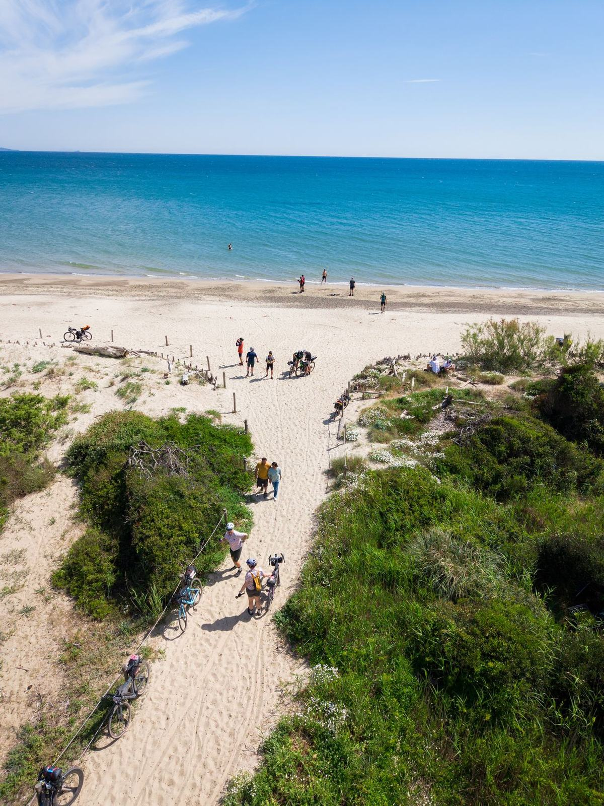
What the Tuscany Trail is not
Before we tell you what it is, we'll tell you what it isn't. It saves us both a bit of time, and it will save somebody a badly chosen week off work.
- It's not a race. There's no ranking, no timer, no cut-off time, no podium. Nobody records when you leave and nobody records when you arrive. If you want something to win, this is not the place.
- It's not a granfondo. No roads closed to traffic, no feed stations every thirty kilometres, no marshal motorbikes, no pasta party. On the Tuscany Trail the feed station is the village bar, and nine times out of ten it's better.
- It's not a package tour. There's no guide in front and no van behind. We don't move your luggage from one hotel to the next. You make your own bookings, when you want and where you want.
- It's not a survival test. You're not in the desert and you're not at the end of the world. You're in Tuscany. Every few kilometres there's a village, a drinking fountain, an open bar, a grocery shop. If you run out of water, you'll find some. If you feel like stopping two hours for lunch, you stop two hours for lunch.
- It's not an event for athletes only. 55% are doing it for the first time. There are participants over seventy. E-bikes have been allowed from the very beginning and we were the first to accept them.
- It's not an event where you need the perfect bike. 77% ride a gravel bike, 15% a mountain bike, and every year somebody turns up on a nineties touring bike and finishes ahead of half the field.
- It's not a crowded event. It sounds like a paradox with six thousand entries, but the starts are spread over three days and two time slots, morning and afternoon. Out on the road you find yourself in a shared event, not in a queue.
- And it's not an event with unlimited places. There are six thousand places and in 2026 they sold out early. This is the one line on this page we ask you to remember.
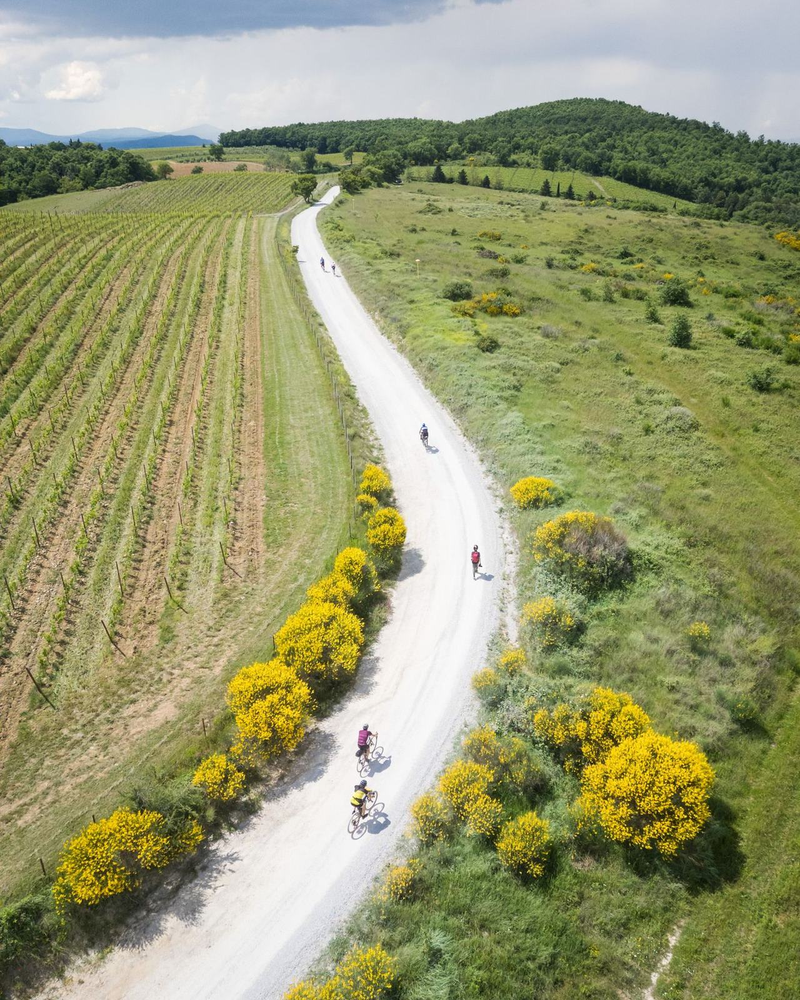
Before the start
There's a moment nobody ever describes properly, and it is half of the Tuscany Trail.
It's the moment before the start, at the event village.
You arrive with the bike on the roof rack or taken apart inside a bag, you reach the expo and pick up your start pack, and then you look around. What you see looks like a world census of bikepacking.
There are ten thousand euro gravel bikes parked next to nineties mountain bikes with the bags strapped on. There are tandems. There are e-bikes. There's someone who rode all the way here from the Netherlands and tomorrow sets off again as if it were nothing. There are two people who didn't know each other ten minutes ago and are already comparing bags.
You hear English, German, French, Dutch, Czech, Spanish, and every now and then somebody even speaks Italian. In 2026 about two thirds of the field came from abroad.
As soon as you're ready, it's time to go.
Starts staggered over three days in a row. It's not just any organisational choice, it's the heart of the system. It lets us manage the flow and it lets you find yourself inside an event that is shared but never congested.
No start gate. No grid. No starting gun.
You leave the village in small groups, you take the first road, and it begins.
The lands you will ride through
One clarification, before we begin.
Below you'll find the lands the Tuscany Trail has been crossing for thirteen editions and will keep on crossing. You won't find the order, you won't find the distances, you won't find the route. That comes after you sign up. If you already knew everything now, the best part would be missing.
One thing, though, we can say without going round in circles.
There is no other region in the world that packs this many different things into four hundred and sixty kilometres. It's not just beauty, it's variety. You start with the sea and you finish with the sea, and in between there are the hills, the mines, the abbeys, the wine, an intact medieval city, the natural hot springs and the white roads the rest of the planet knows from photographs without knowing where they are.
The people who have done it write more or less the same words in the survey every time.
«Tuscany is everything you've ever read about or seen on tv, just breathtaking everywhere you look.»
Participant 2026
The Etruscan Coast and Campiglia Marittima
It starts and finishes here, on a hill looking out over the Tyrrhenian Sea.
Campiglia Marittima is a medieval village dominated by the Rocca, a fortress built between the twelfth and thirteenth centuries. From up there your eye slides down the hills to the coast, and on clear days the outline of the island of Elba stands out on the horizon. Which from 2027 is no longer only an outline, but we'll get to that in a few pages.
In the old town the lanes narrow and then open suddenly onto hidden little squares and ancient churches, like the Pieve di San Giovanni, Romanesque, eleventh century, which is a jewel precisely because it isn't trying to be one. The buildings are stone, the craft workshops are still workshops.
Just outside the village is the San Silvestro Archaeological Mining Park, where you go inside the medieval mines this valley dug metal out of for centuries.
The name Etruscan Coast is not a tourist invention. Before the Romans, before anyone else, they were here.
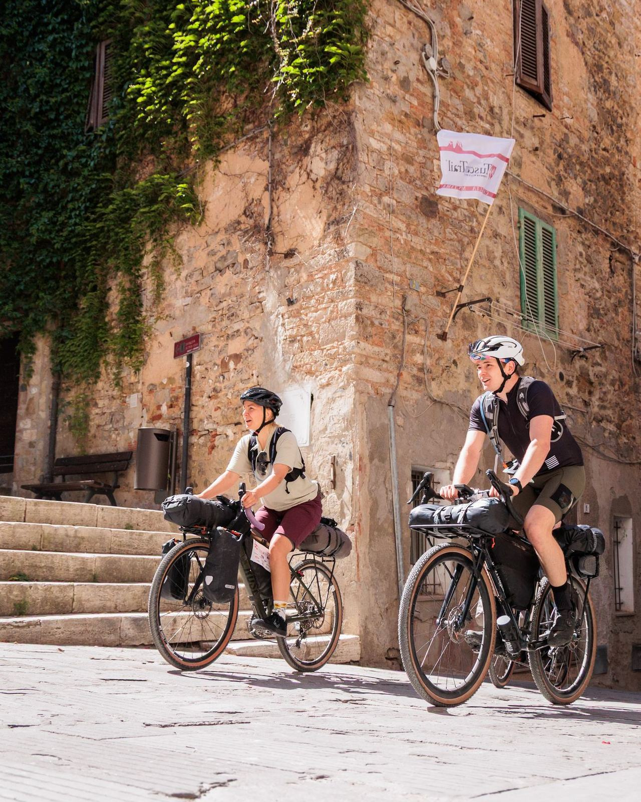
The wild sea — Scarlino, Cala Violina, Castiglione della Pescaia
There's a stretch of Tuscan coast where cars can't go. You get there on foot or by bike, and that's it.
Inside it there are two bays.
Cala Violina is a crescent of sand so fine that it makes a sound when you walk on it, and that sound is where its name comes from. A little further on there's Cala Martina, smaller, more hidden, wilder. All around, thick Mediterranean scrub guards the two coves as if they were a secret, and in a way they are, because to see them you have to earn them.
The gravel track that takes you there runs through the green with sudden glimpses of blue. It's one of those stretches where people get off the bike for no particular reason.
Then Castiglione della Pescaia opens up, at once a medieval village and a seaside town. The tenth century castle sits perched above the houses with its towers, and from up there you can see the whole Tuscan Archipelago. Below, kilometres of golden beach and pine woods giving shade.
Many participants describe this as the part that won them over. And here is something that says more than a lot of words — in 2025 the local council installed new bike racks. A small gesture, but it tells you how these towns have learned to expect us.
«Il tratto in comune alle due tracce era meraviglioso, estremamente panoramico ed emozionante.»
(The section shared by the two routes was wonderful, extremely scenic and moving.)
Participant 2026
It's here, at Castiglione della Pescaia, that the two routes split. Up to this point you have all been riding together, the ones doing one hundred and sixty kilometres and the ones doing four hundred and sixty. From here on everyone takes their own road.
The Colline Metallifere and the Maremma — what the short route sees
Riders on the Newbie route climb inland from here, into the Tuscany the tourists haven't found yet.
Gavorrano sits in the Colline Metallifere and was for decades the pyrite capital of Europe. The Aldobrandeschi castle dates back to the eleventh century, but the thing that stays with you is the Teatro delle Rocce, an amphitheatre carved inside a disused quarry. A place where an industrial wound became a stage.
Caldana is built in concentric circles, with the streets spiralling around the old core up to the Church of San Biagio. From the top, on clear days, you can see the island of Giglio. All around, centuries old olive groves and the Monteregio di Massa Marittima vineyards.
This is the Maremma. Land of butteri, the local cattle herders, of wild boar, of cinta senese pork, of people who say little and say it well. The part of Tuscany where mass tourism never really arrived, and thank goodness for that.
Riders on the short route see the sea, the wild coves and these hills in two days. It's not a reduced version of the Tuscany Trail, it's a whole part of it.
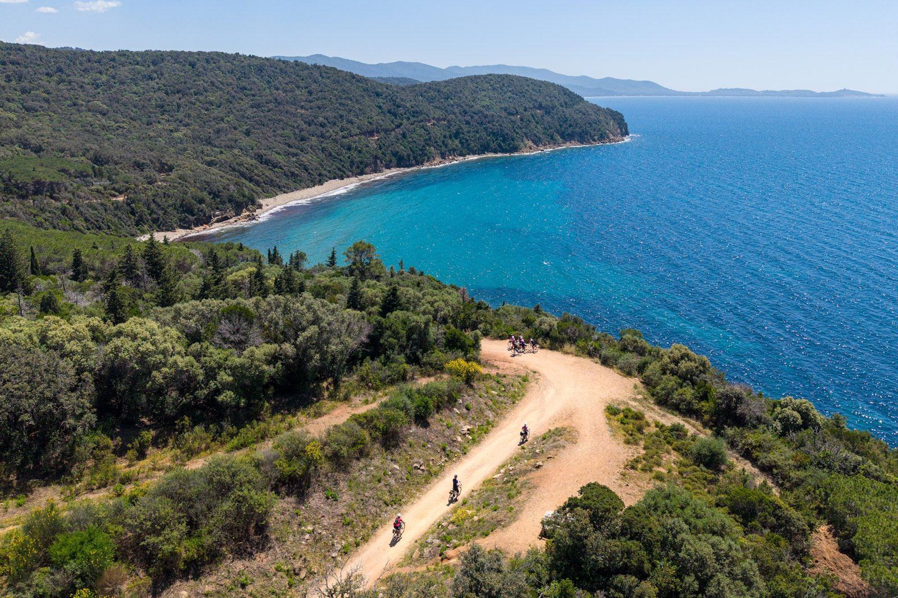
And from here on, the Original route
The Val d'Orcia
This is the postcard. And it's one of those rare times when the postcard is uglier than the original.
A UNESCO World Heritage Site, the Val d'Orcia is that expanse of rolling hills, lone cypresses and isolated farmhouses that anyone who has switched on a computer in the last twenty years has seen at least once without knowing where it was.
At the end of May the wheat is still green, but a green so deep it looks golden. The light changes hour by hour and at sunset the hills turn pink. It's the time of year when this valley is at its best, and it's no accident that the Tuscany Trail is ridden now.
And this is where the white roads are at their very best. Wide, compact, fast, with rows of cypresses running straight up to a farmhouse on top of the hill. If you have ever seen a photograph of Tuscany in your life, chances are it was one of these roads.
Inside the valley there are three places worth slowing down for.
The Abbey of Sant'Antimo. Romanesque, in travertine and alabaster, according to legend founded by Charlemagne in the ninth century. It stands among the vineyards of Montalcino, the Brunello ones, and it has a purity of line that silences even the people who turn up in a hurry. Inside, columns and capitals carved with leaves and animals. Until a few years ago the monks sang Gregorian chant here.
Bagno Vignoni. Here the main square of the village is not a square, it's a pool of steaming thermal water. Just outside the village, going down towards the Parco dei Mulini, there are the free pools carved into the travertine, hot water at no charge in the middle of the green. People who stop there at the end of the day, after a hundred and twenty kilometres, usually never forget it.
Pienza. The ideal city of the Renaissance, designed by a humanist pope so that it would be harmony turned into town planning. From the terrace you look out over the whole valley. In the shops there's Pienza pecorino, and it's worth buying a piece even if you then have to find room for it in your bag. Some manage it, some eat it on the spot.
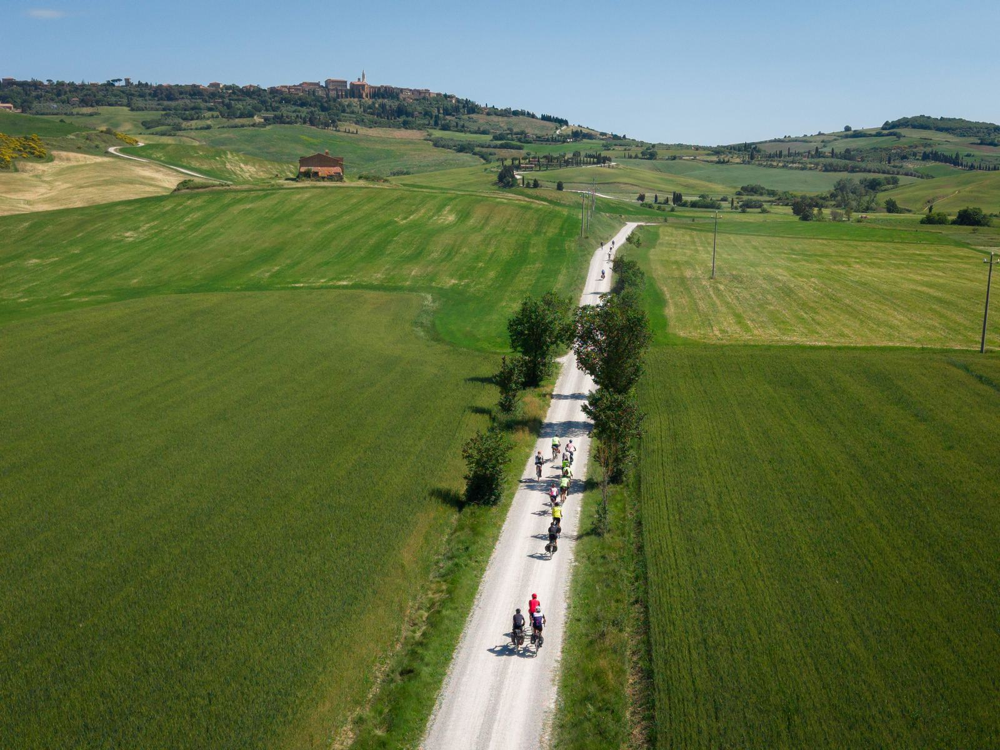
Siena
Piazza del Campo at the end of May is not the Piazza del Campo of August.
The Palio is run on 2 July and 16 August, but in May the city is already inside its own liturgy. There's the draw for the contrade that join the seven who race by right, there are the first dinners, the trials, the flags appearing on the balconies. The air is electric in a way the July tourists will never see, because in July it is already a show while in May it is still a rite.
And then there's something that only happens when you arrive by bike.
Riding into a city like Siena with dust on your legs, and sitting down on the ground in that shell of red brick with an ice cream in your hand. The proportions of things realign all at once. You got here on your own legs.
The Via Francigena — Monteriggioni, Colle Val d'Elsa, San Gimignano
For a long stretch the Tuscany Trail runs along the Via Francigena, the pilgrim way that since the Middle Ages has taken travellers from northern Europe down to Rome. You ride through a thousand years of people who came this way on foot in much the same spirit as you.
Monteriggioni is a ring of walls five hundred and seventy metres long with fourteen towers, built in the thirteenth century by the Republic of Siena as an outpost against Florence. It has survived intact. Dante mentions it in the Inferno, comparing its towers to giants. You go in through the Porta Franca, the one facing Siena, and inside there's a square, a Romanesque church and silence.
Colle di Val d'Elsa is perched on a spur of rock and is the world capital of crystal. All around, the small villages of the Francigena, Strove, Gracciano, Campiglia dei Foci, where time stopped without asking anyone's permission.
San Gimignano, the Manhattan of the Middle Ages. At its peak it had seventy two towers, today fourteen are left, and that is enough to draw a skyline you can recognise from twenty kilometres away. In Piazza della Cisterna there's what a fair number of rankings consider the best artisan ice cream in the world. It's not the reason people ride the Tuscany Trail, but after a climb it isn't a negligible detail either.
The Val di Cecina — Volterra and Montecatini
Then the circle starts to close, through a harsher, more wooded, more solitary Tuscany.
Montecatini Val di Cecina sits at four hundred and fourteen metres, with the castle tower rising another thirty eight above it. In the nineteenth century this was the most important copper mine in Europe, and the mining castle of Caporciano is still there to tell the story. In 2025 the participants who made it up here were greeted by a hot air balloon. Nobody was expecting it, and that is exactly the kind of thing you cannot plan.
All around, oak woods, clay gullies, isolated farms and kilometres where you meet nobody except others like you.
The finale, which we're not telling you about
And then you drop down towards the sea.
The air changes, the smell turns salty again, and at some point the Tyrrhenian reappears in the distance. It's the same sea as four days earlier and it is not the same sea at all.
About how the Tuscany Trail 2027 ends, we're saying nothing more.
In 2026 we changed the last part of the route and nobody saw it coming. For 2027 we have changed it again, and anyone coming back will find something they have never seen. We already know it will be one of the things people talk about most in the end of event survey.
The rest you find out by riding. That's the deal.
Food, which is half the journey
There's something that comes up in the survey with a frequency that surprised us at first and doesn't any more.
Asked what they would have changed, one person answered like this.
«Nothing. Loved it all. The route, the people, the scenery, the atmosphere. The food. Everything.»
Participant 2026
Food appears on that list, and it appears almost every time.
The Tuscany Trail crosses one of the strongest food regions in the world at the best time of the year, and it does it at the right speed to notice. Forty kilometres by bike separate one kitchen from another. In a car you would never notice.
On the coast you eat humble fish, cacciucco stew, salted anchovies, and you drink cold white wine.
In the Maremma everything changes. Wild boar, cinta senese pork, acquacotta soup, tortelli maremmani the size of your palm, and Morellino di Scansano wine.
Around Siena come the pici, thick spaghetti made by hand and rolled one at a time, with aglione garlic sauce or cacio e pepe. Then ribollita, chicken liver crostini, Pienza pecorino, finocchiona salami.
And then there's schiacciata, the best bread for bikepacking any civilisation has ever invented. It costs little, it fits in a pocket, it doesn't crumble, and with Tuscan ham inside it will carry you forty kilometres.
A note on Tuscan bread, since every year somebody is caught out by it. It has no salt. It's not a baker's mistake, it has been this way for seven hundred years. Try it with something tasty on top and you'll understand why.
The long lunch rule
The best piece of advice in this whole guide is also the most counterintuitive.
Stop for lunch. Really.
Not a sandwich swallowed standing next to the bike. The table, the shade, the cold water, a plate of pasta, the coffee. An hour, an hour and a half. The people who do it get in at the end of the day less wrecked than the ones who don't, and they remember the day far better.
The Tuscany Trail is not a race. The time you lose at the table is not lost.
«Plus on s'approche de la ligne d'arrivée, plus les concurrents sont nombreux aux terrasses des cafés.»
(The closer you get to the finish, the more riders you find at the cafe tables. They linger, the way you slow down your reading in the last pages of a book that has caught you.)
Participant 2025
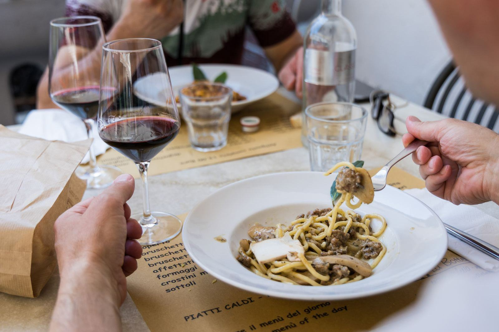
A typical day
There is no typical day, but if we really had to describe one it would look like this.
- Early start. Not to rack up kilometres, but to catch the cool hours. At the end of May in Tuscany, from seven to eleven in the morning you ride in the best light and the best temperature of the day.
- Breakfast at the village bar. Cappuccino and a pastry, two euros fifty, the barman asking where you're from and telling you thirty more came through yesterday.
- The first stretch. Fresh legs turning on their own. This is usually where you meet the people you then ride half a day with, without having agreed on anything.
- Long lunch. See above.
- The afternoon. Slower, more contemplative. This is when you take the photographs and take a wrong turn because you were looking at the view.
- Arriving. Basecamp, farmhouse, hotel, tent. Shower, beer, dinner, and the evening that starts on its own. At the basecamps you always end up talking to somebody whose language you don't really understand and who you understand perfectly well anyway.
On average people finish in four days. Those with time take five or six and have a better time of it. Those with three grit their teeth and still don't regret it.
«Sono tre anni che partecipo e ogni anno è stata un'avventura diversa.»
(This is my third year taking part and every year has been a different adventure.)
Participant 2026
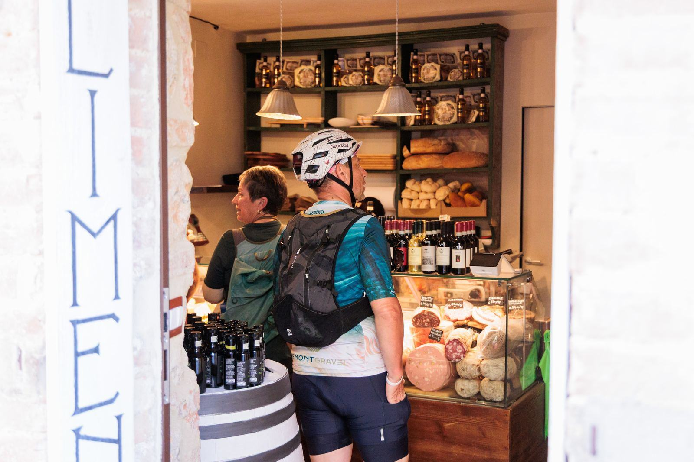
Where you sleep
This is the question we get asked most of all, right after the one about training. The short answer is that you sleep wherever you like.
Here is how participants split in 2026.
65% never put up a tent. If you have it in your head that bikepacking must mean a sleeping bag and a bivouac, this number is the answer. The majority sleep indoors.
Hotels, B&Bs and farmhouses
Along the route there are places that know the Tuscany Trail by now and know what a cyclist needs, a safe spot for the bike, a late dinner, a tap to wash your clothes.
An honest warning, and the participants themselves asked us for it. In the most beautiful areas it pays to book early. Those who move in March find everything, those who move in May find less.
The basecamps
They are camping spots organised by local communities along the route. Sports clubs, football pitches, farmhouses, community halls. Basic facilities, local cooking, and the evenings around the tables that have become legendary.
In 2026 they were used by 33% of participants, basically one in three.
They are not equipped campsites and we're not pretending they are. They are village communities that open their doors to a few hundred foreign cyclists for one night, and they do it with volunteers. People who sleep there choose it for that, not for the facilities.
When they work, though, this is how they work.
«Podere Sant'Antonio è stato il momento più bello per me. Posizione fantastica, atmosfera bellissima, proprietari gentilissimi. Gli organizzatori meritano davvero un applauso.»
(Podere Sant'Antonio was the high point for me. Fantastic setting, beautiful atmosphere, extremely kind owners. The organisers really deserve a round of applause.)
Participant 2026
«Campiglia dei Foci va citato a parte. La cordialità, l'accoglienza e l'atmosfera generale non le ho trovate uguali da nessun'altra parte.»
(Campiglia dei Foci deserves a mention of its own. The friendliness, the welcome and the general atmosphere are not something I have found anywhere else.)
Participant 2026
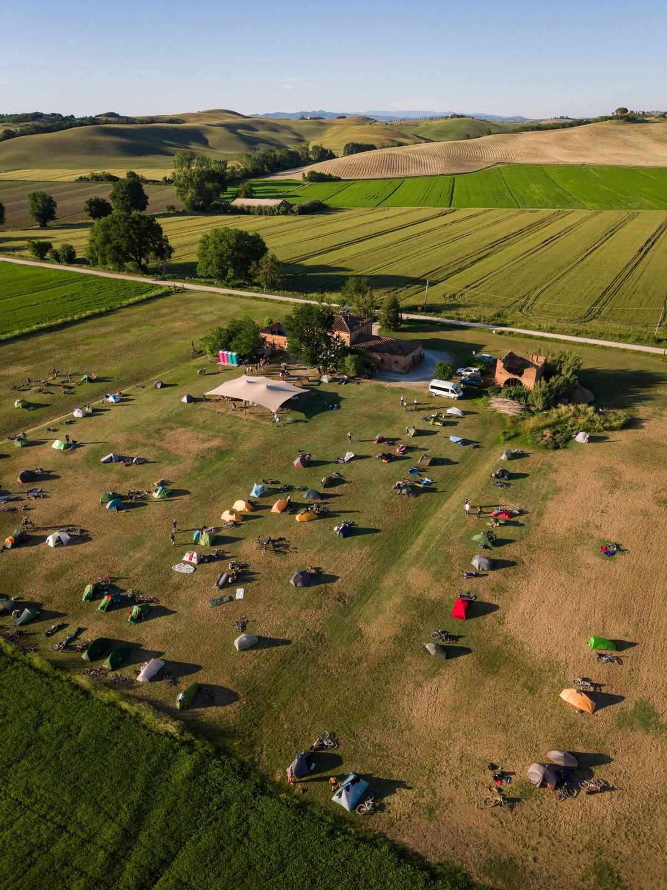
Real freedom
No compulsory stages. No bookings imposed on you. You can mix it however you like, one night in a tent, one in a village, one in a farmhouse with a pool.
86% of 2026 participants had no trouble at all finding somewhere to sleep.
The ten questions you don't ask us
These are the real doubts. Not the contact form ones, the ones you turn over in the evening looking at the website before closing the page.
We have collected them over thirteen years. We answer with numbers where there are numbers, and where there aren't we say so.
«I'm not fit enough»
You decide how hard it is, and that is not a throwaway line.
There's no ranking, no cut-off time, no compulsory stages. You decide how many kilometres to ride in a day, where to sleep, how many times to stop. You choose the level of effort before you leave and you can change it on the road if you want.
The Original is still a loop of about four hundred and sixty kilometres.
What there isn't is extreme technical difficulty. The route is designed to be ridden with your head up, so you can look around instead of at the wheel in front of you.
If the number frightens you, there's the 160 kilometre Newbie route. It's made for exactly this.
And then there's something that changes the picture in 2027. The Detour to the island of Elba attaches to both the Original and the Newbie, so you build the distance around yourself.
Route
Four sizes, and you receive all the tracks. Decide at the last moment, even while you're riding.
And there's something people write to us every year that is worth more than any training plan.
«Mi è piaciuto un sacco ed è stata una delle più belle avventure della mia vita. Tre anni e mezzo fa pesavo 210 chili, ora ne peso 120 e faccio il Tuscany Trail.»
(I loved it, and it was one of the finest adventures of my life. Three and a half years ago I weighed 210 kilos, now I weigh 120 and I ride the Tuscany Trail.)
Participant 2026
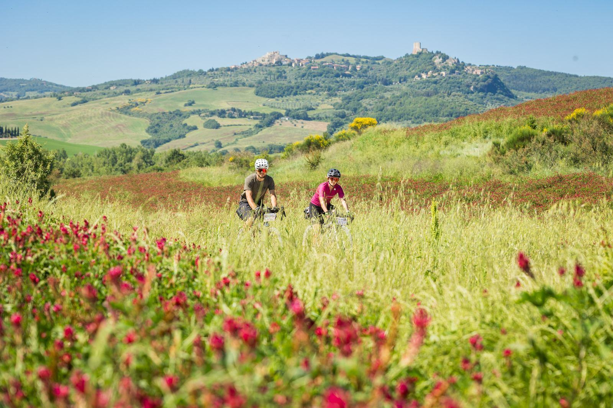
«It's my first time at a bikepacking event»
You're in the majority. 55% of 2026 participants were at the first bikepacking event of their life.
The Newbie route is 160 kilometres over two days. On the first day you ride alongside everyone, including the ones doing the long one. You breathe the same atmosphere, you chat, you look at how they packed their bags, you steal the tricks from people who have been doing it for years. On the second day you follow a dedicated, scenic track.
By the second day you have already learned a pile of things no manual teaches you.
And the Elba Detour is open to you too.
The new thing that takes half the worry away — the Tuscany Trail app
In 2027, for the first time, participants will have the official Tuscany Trail app.
More than anything else it makes life simpler if it's your first time, because it removes the question that follows you all day when you don't know the area — so when do I next find something to drink and eat?
With the app in your pocket you know at any moment how many kilometres to the next drinking fountain, the next bar, the next place to eat. You see the track, the profile of what's coming, and the updated weather for where you're heading.
It means deciding your day while you're living it, instead of planning it the night before and hoping it works out. For a first timer that is the difference between an adventure and an anxiety.
«Per il mio grado di allenamento e per le mie aspettative direi che non avrei potuto trovare di meglio come prima esperienza. Non mi sono divertito, ho goduto.»
(For my level of fitness and my expectations I'd say I couldn't have found anything better for a first time. I didn't just enjoy it, I revelled in it.)
Participant 2026
«Essendo la prima esperienza ho trovato tutto fantastico. Dai panorami, alle persone e l'atmosfera generale.»
(Being my first time I found everything fantastic. From the views to the people to the general atmosphere.)
Participant 2026
«I don't have the right bike»
There is no such thing as "the" right bike. There's yours.
When you get to Campiglia you find yourself among every kind of bike that exists. Here's what 2026 participants actually rode.
The route is designed for a gravel bike, it's the most comfortable choice and three quarters of the field make it. But a mountain bike is absolutely fine, especially if you don't feel comfortable handling a loaded gravel bike on rough tracks.
And if you have an e-bike that's fine too. We were the first to accept them and we have no intention of going back. The battery range is your business.
The only bike we advise against is a road bike.
If you're coming from far away and don't want to bring your own, you can rent one in Campiglia.
«La liberté est totale, c'est ce qui en fait tout l'intérêt.»
(Freedom is total, and that is exactly what makes it interesting.)
Participant 2025
«I don't know what to pack»
The Tuscany Trail can be done in two opposite ways, and in a thousand shades in between.
Credit card mode. Light bike, two small bags, you sleep in B&Bs and farmhouses, you eat out. It's the majority choice.
Full loaded mode. Tent, sleeping bag, mat, stove. More weight, more self sufficiency, more adventure.
Chapter 10 has the full packing list, organised around what you will actually do. Chapter 11 has the number one mistake, and it is about the bags.
If you're starting out, there's only one piece of advice. Travel light and use the gear you already own. Don't buy anything now.
«I'm coming alone and I don't know anyone»
Coming to the Tuscany Trail on your own is probably the best choice.
We're not saying it to console you. The numbers say it. Asked how well did you get on with the other participants, 2026 participants answered with an average of 4.65 out of 5. It's the highest score in the whole survey, tied with the atmosphere.
The encounters happen on their own. At the village before the start, during a stop at a bar, in the evening at the basecamps where you eat and pitch your tent side by side and end up talking late.
There are six thousand of us from seventy nations, with staggered starts and different paces. Every year friendships are born that come back together the year after.
«I liked that I could ride at my own pace, solo, but I was never really alone.»
Participant 2025
«Siamo stati (quasi) tutti una grande famiglia che non ti lascia indietro se sei in difficoltà, che ti aspetta anche se fino a poche ore prima non ti conosceva.»
(We were (almost) all one big family that doesn't leave you behind when you're struggling, that waits for you even though a few hours earlier it didn't know you.)
Participant 2025
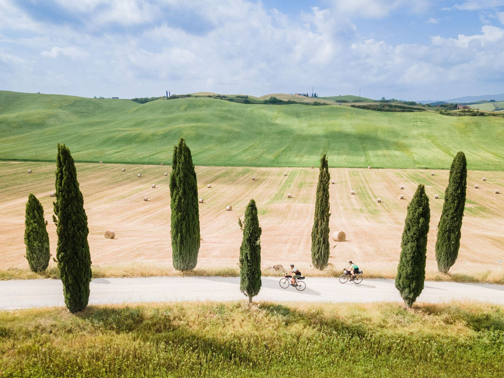
«What if something happens to me?»
It's the fear that stops more people than any other. What if I break the bike. What if I can't do it. What if I'm left alone in the middle of nowhere.
Short answer, on the Tuscany Trail you are never in the middle of nowhere.
- You are never really alone. Thousands of people on the same track in the same week. Anyone who stops with a problem, in Tuscany, is reached by somebody within minutes.
- The route is tested. The track is the result of years of surveying, there are no dangerous sections and nothing that calls for mountaineering.
- You are covered by insurance for the whole duration of the event. It's included in the entry.
- You can stop whenever you want. The route crosses towns with trains and buses. If for any reason you decide to head back early, you return to the start easily.
- Water and food are not a problem. Free drinking fountains, bars, shops, restaurants and farmhouses punctuate the route, and the app always tells you where they are. 77% of participants said finding food was easy or very easy.
- And you come back to where you started. A loop, your car in the reserved car park, no logistics to invent.
«I'm a woman, and I'm setting off alone»
Every year hundreds of women set off on their own, and that is one of the reasons the Tuscany Trail has grown the way it has.
But we'll tell you the uncomfortable part too, because it's more useful than the reassuring part.
In the 2026 survey several women participants pointed out that at some basecamps the showers are outdoors with no separation between men and women. It's not something we can pretend we didn't read, and it's one of the points we are working on with the communities for 2027.
If you'd rather not think about it at all, remember that 65% of participants sleep indoors and never set foot in a basecamp.
As for the rest, the roads are quiet, the towns are safe, and Tuscan hospitality does the rest.
«I'm over sixty»
At the Tuscany Trail 2026 there were participants over seventy who finished the route.
The point is not age, it's pace. Those with more years and less hurry often take six days instead of four, sleep in hotels, stop two hours for lunch and go home having seen far more than the ones who rushed.
«Ho sessantotto anni e riesco a fare circa ottanta chilometri al giorno. Nel complesso questa è una delle esperienze più belle della mia vita.»
(I'm sixty eight and I manage about eighty kilometres a day. All in all this is one of the finest experiences of my life.)
Participant 2026
«Sono tre anni che partecipo e ogni anno è stata un'avventura diversa. L'anno prossimo ho intenzione di passare da cinque a sette giorni. Voglio fare veramente il cicloturista.»
(This is my third year taking part and every year has been a different adventure. Next year I plan to go from five days to seven. I want to be a proper bike tourist.)
Participant 2026
«I don't have a week off»
You don't need a week.
The window is seven days, from 19 to 25 May, but the average time to finish is four. With the Newbie route it's two.
And above all, you don't have to sleep in Campiglia the night before. You collect your pack and set off the same day. Anyone who wants to stay and enjoy the village the evening before is welcome to, but it isn't compulsory.
So you arrive Friday morning, collect, set off, finish in four days and you're home on Tuesday. A long weekend and two days off.
With the Newbie you can do it in a weekend.
«What exactly do I get for the fee»
This is the most legitimate question of all and very few people ask it, which is a shame, because it deserves a serious answer.
Here is what's inside.
- The official GPS tracks, all of them, redrawn every year and the result of twenty years of research on the ground. And with them comes the thing nobody else can give you — access to private sections that open only for Tuscany Trail participants, once a year. It's not a track you could download elsewhere, because elsewhere it doesn't exist and on those roads you couldn't ride.
- The official event app, new for 2027, with water, food, services, track and weather always at hand.
- The start pack — the exclusive cycling cap for entrants only, the printed route map with full and partial elevation profiles, the cue card and the wristband.
- The printed event magazine, to read before and keep afterwards.
- The guides — the one to arrive prepared and the one to the places you will ride through.
- The event village and the expo in Campiglia Marittima, with parking reserved for participants.
- The basecamp network along the whole route, where you stop free of charge or at special prices.
- Toilets and showers at the finish, because going home after four days without washing is not the right way to end a journey.
- The insurance cover for the whole duration of the event.
- The photo service. Photographers, videomakers and drones along the route, and the downloadable gallery with all the photos taken of participants.
- The finish pack — the finisher cotton bag, the certificate, a bottle of excellent wine from the Maremma wine consortium and a beer to toast with.
- The discounts with Tuscany Trail partners and on the other Bike Adventure Series events, plus Adventure Points and the Finisher badge on your profile.
- The right to be there, which sounds like rhetoric and isn't. There are six thousand places and no more, and in those days Tuscany knows we are coming. The councils prepare the crossings, the clubs open their grounds, the bars add tables. What you buy is a week in which a whole region makes room for six thousand bicycles.
For 2027 there are two formulas.
Contains everything you have just read.
Adds the official edition cycling jersey, the Bike Adventure Series cotton shirt, priority lane accreditation, early entry to the other events in the series and an hour of video call with one of our experts to build your stages together.
Details and prices reach the mailing list before the opening.
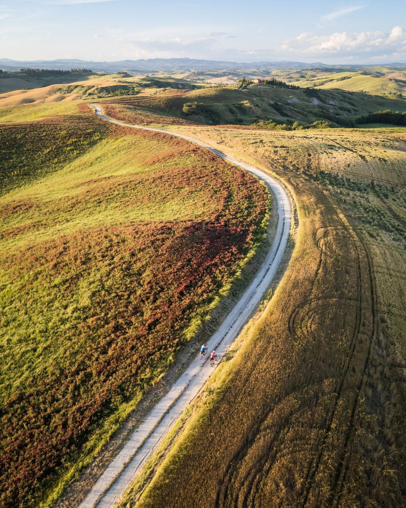
The voices
Real answers from the 2026 survey, in the language they came in.
«È stata la mia prima Tuscany, un'esperienza indimenticabile, ho pianto all'arrivo, non riuscivo a parlare dall'emozione e dalla stanchezza e soprattutto dal fatto che ero riuscito a portarla a termine senza tagliare nemmeno un metro. Quando ho ritirato il pacco alla fine, un addetto mi ha chiesto com'era andata e non riuscivo a parlare. Mi ha detto, questa è la migliore risposta.»
(It was my first Tuscany, an unforgettable experience. I cried at the finish, I couldn't speak from the emotion and the tiredness and above all from the fact that I had made it to the end without cutting a single metre. When I picked up my pack at the end, someone from the staff asked me how it went and I couldn't say a word. He told me, that is the best answer.)
Participant 2026
«non cambierei nulla! è un evento che ti emoziona... profondamente!»
(I wouldn't change a thing! It's an event that moves you... deeply!)
Participant 2026
«Dear Tuscany Trail Team, to be honest, I could not really see what could be improved. I just would like to say thank you. And the motto "Ride your dream" came true.»
Participant 2026
«Es hat meine Erwartungen übertroffen. Ein großes Lob an den Veranstalter und alle Helfer.»
(It exceeded my expectations. Great praise to the organiser and to all the helpers.)
Participant 2026
«C'était une expérience vraiment très sympa. L'ambiance est assez géniale. Tout ce brassage de personnes différentes de nationalités différentes.»
(It was a really lovely experience. The atmosphere is quite brilliant. All that mixing of different people from different nationalities.)
Participant 2026
«It was a great experience seeing through the UNESCO world heritage sites, Tuscany rolling hills and medieval villages and towns. Not mentioning of food and Tuscany wine, it was brilliant, a life time experience.»
Participant 2026
«Favolosa esperienza. Ho trovato persone gentili e disponibili ed una atmosfera conviviale che mi ha riempito di gioia!!!»
(A fabulous experience. I found kind, helpful people and a convivial atmosphere that filled me with joy!!!)
Participant 2026
«It was a fantastic experience! I did it with my mum, first time in Europe, in Italy and in an event like this. We loved it!»
Participant 2026
«Dopo cinque anni di fila le emozioni sono sempre tante anche se alcuni luoghi li ho già attraversati. Ma basta un cambiamento di clima che ti fa vedere il panorama con occhi diversi.»
(After five years in a row the feelings are still just as strong, even though I have already ridden through some of these places. A change in the weather is enough to make you see the view with different eyes.)
Participant 2026
«It has been a great experience and even it was pretty hard for me sometimes, I enjoyed every single part of the route. Thank you so much for creating this beautiful event and providing such a perfect route!»
Participant 2026
«Thanks for great adventure. See you again! Greetings from Finland!»
Participant 2026
«È stato tutto bellissimo!! Il percorso più tecnico di quanto me lo aspettassi… ed è stato incredibile!!»
(It was all beautiful!! The route more technical than I expected... and it was incredible!!)
Participant 2026
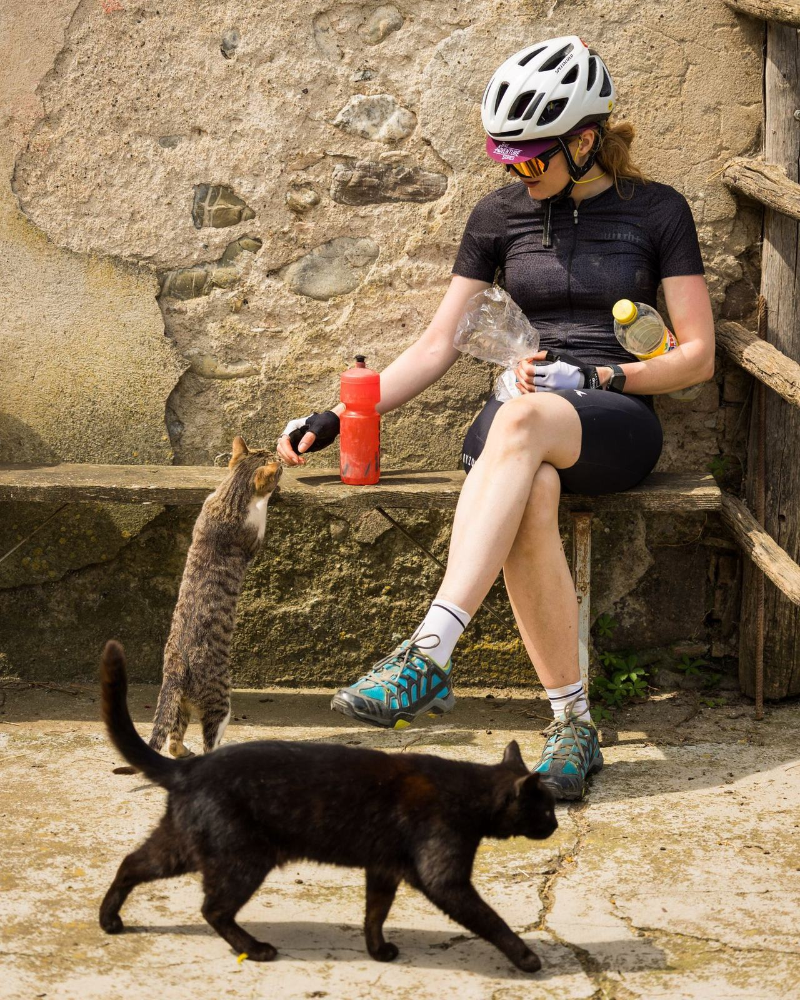
How to get ready
This part is useful even if you don't sign up. Keep it.
Six months before
You don't need a training plan. You need one thing only, to ride and put the kilometres in your legs. Use the bike you'll bring to the Tuscany Trail, and remember to use it on gravel.
Three months before — February and March
Start loading the bike. Take the bags you think you'll use, fill them, and go out on your usual ride. A loaded bike brakes differently, steers differently and climbs very differently.
Book the first nights, if you have decided to sleep indoors. The most beautiful areas fill up.
Test the saddle for several hours in a row. It's the point where most adventures fall apart, and we talk about it in the next chapter.
One month before — April
Do at least one long ride with the full final load, ideally with a night out. It is there to reveal the small things that ruin trips, like the bag that rubs your knee or the light that won't clip on.
Get the bike serviced. Drivetrain, brakes, tyres, spokes.
The week before
Don't train. Rest, eat well, pack your bags calmly and weigh them.
The number one mistake
We promised you this at the start of the guide.
It's not training. It's not the bike. It's not navigation.
It's the weight.
Every year hundreds of people set off with too many kilos of stuff on the bike and discover on the second day that those kilos aren't felt on the flat, they're felt on the climbs, and the Tuscany Trail has climbs.
The appeal of carrying everything with you is strong, and we understand exactly where it comes from. But Tuscany is the wrong place to be self sufficient, because there's no need. Every few kilometres there's a village with everything you need.
Rule of thumb. Put everything you want to bring on the table. Then start taking things away. If you have a doubt about an item, ask the people who have been there — on the Bike Adventure Series forum you'll find hundreds of people who have already ridden the Tuscany Trail and who really do answer, with which bike, which tyres, which bags.
Hundreds of people who have already ridden the Tuscany Trail.
Join the forum →And there's a second mistake, less famous and more painful.
The saddle. The wrong saddle doesn't stop you on the first day. It destroys you on the third. If you have the slightest doubt about yours, sort it out now, not in March and not in May.
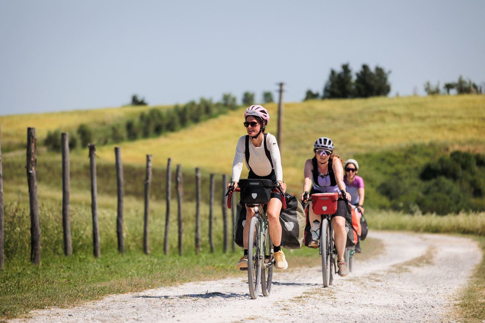
How to get to Campiglia Marittima
Start and finish are the same place, so the logistics are as simple as they get. You leave your transport and you find it again.
Here is how people arrived in 2026.
By car. Exit off the SS1 Aurelia, with parking reserved for participants.
By train. The nearest station is on the Tyrrhenian Genoa to Rome line, which is well served and convenient. Many people arrive by train with the bike and leave the same way.
By plane. The nearest airport is Pisa, well connected by train. Florence is the alternative.
The full practical directions, with addresses and times, arrive in your personal area after you sign up.
How to get into the Tuscany Trail 2027
Mark two dates.
1 November 2026, 11am — The bundles
The double ticket. Tuscany Trail 2027 plus a second adventure of your choice from the other Bike Adventure Series events — Trentino Gravel, The Grand Escape, Unpaved Roads.
Each combination has a limited number of places. When a combination is gone, it's gone.
3 December 2026 — Single entries
Tuscany Trail only. Two formulas, Classic and No Stress, the latter with the extra services.
Six thousand places in total. In 2026 they were gone well in advance.
The practical things to know now
- Start date and time slot are chosen at sign up and are binding. The most popular days go first. It's the only thing about the Tuscany Trail you can't change afterwards.
- The route, on the other hand, you can change. You give a preference when you sign up, but you receive all the tracks and you can decide during the event. Original, Newbie, with Detour or without.
- The medical certificate is not needed at sign up. You upload it from December in your personal area.
- The Elba Detour is already included. It's not an extra charge.
And now, the part that counts
The same thing happens every year and every year it upsets us in the same way.
In the days after we close we get dozens of messages from people who had thought about it, who had almost decided, who meant to talk it over with a friend and then put it off for three weeks. There is nothing we can do for them, because six thousand is six thousand.
If you're on the list you get the alert twenty four hours before each opening, the details of the Elba Detour before anybody else and everything you need to get ready.
Stay on the list. It's the only thing we're asking you to do today.
1 November at 11am, the bundles open. 3 December, single entries open.
Join the list on tuscanytrail.it →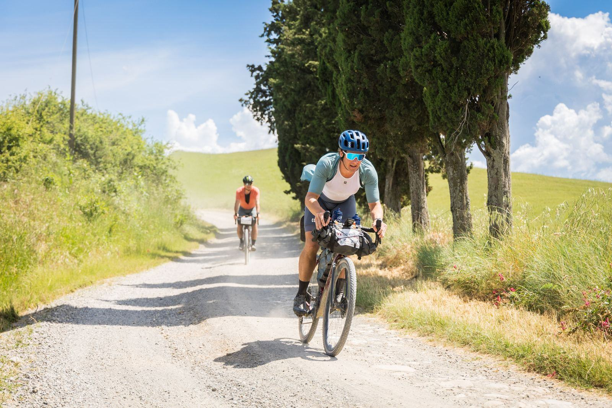
The pact
The Tuscany Trail promises you three things and promises you nothing else.
- The first. Nobody times you, nobody ranks you, nobody watches you arrive with a disappointed look because you took too long. Finishing is the only goal, for the first rider as much as for the last.
- The second. You'll see a part of the world you can't see from a car, can't see from a train and can't see on foot, because it's too big for your legs and too beautiful to rush. The bicycle is the only vehicle at the right speed, and Tuscany is the place where you feel this more than anywhere else.
- The third. You'll come home different.
It's not a brochure line, it's the thing people write to us most often and most sheepishly, because it's hard to explain to somebody who wasn't there. You leave as somebody who rides a bike and you come back as somebody who crossed a region on their own legs, carrying only what fitted in the bags. Four days in which you decide everything, in which you discover you have more in reserve than you thought, and in which the world shrinks to the road ahead and what you actually need.
And from that reserve there is no going back. People who have done it recognise it in each other, and that's why they meet again the year after.
The rest is up to you.
19 to 25 May 2027, Campiglia Marittima.
Ride your dream.
The Tuscany Trail team
P.S. — If you skipped everything in this guide and landed here, these are the two lines that matter. On 1 November 2026 the bundles open, on 3 December single entries. There are six thousand places and in 2026 they were gone well in advance. Anyone on the list gets the alert twenty four hours before each opening. Nothing else is needed.
P.P.S. — 55% of the people who set off last year had never done a bikepacking event in their life. They gave the experience 9.13 out of 10. What you're missing isn't experience. It's the date on your calendar.
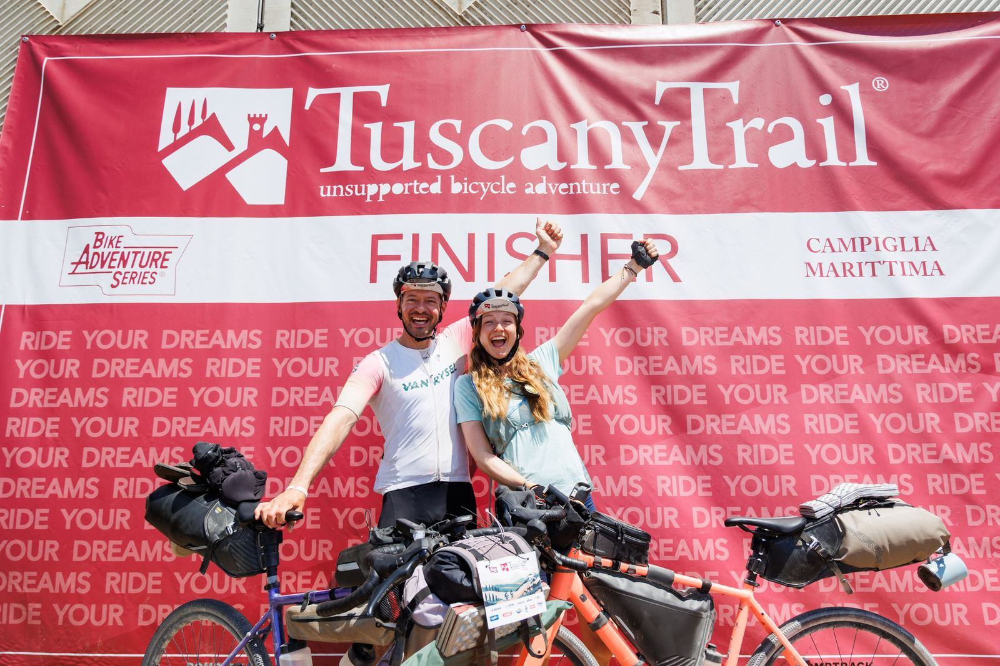